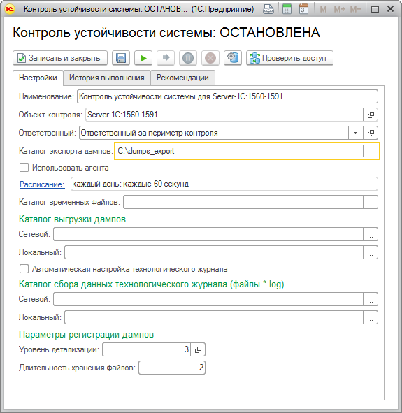
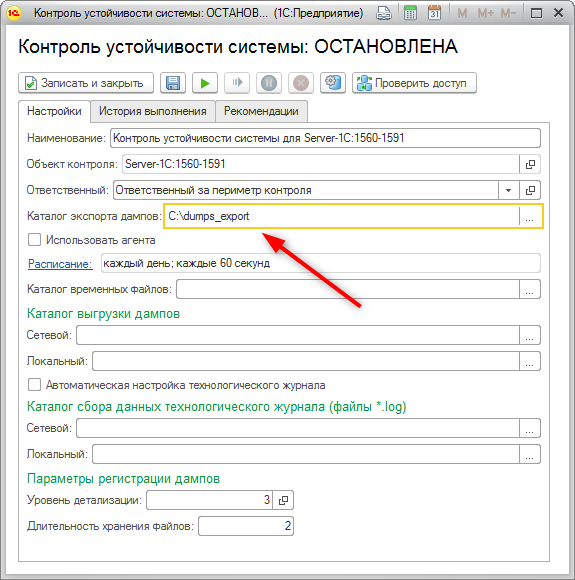
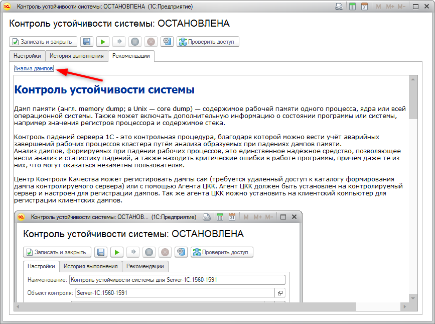
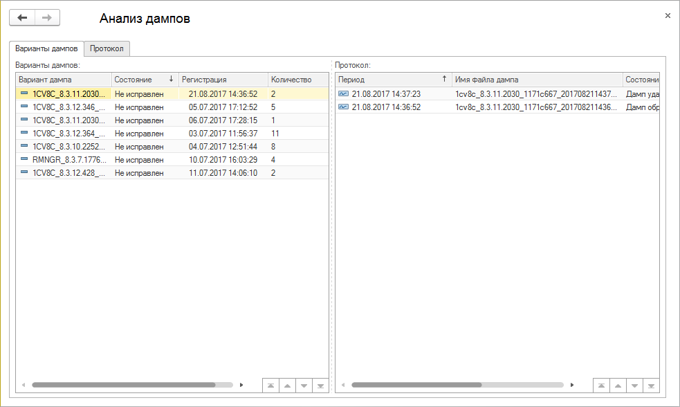

Контроль устойчивости системы
Дамп памяти (англ. memory dump; в Unix — core dump) — содержимое рабочей памяти одного процесса, ядра или всей операционной системы. Также может включать дополнительную информацию о состоянии программы или системы, например значения регистров процессора и содержимое стека.
Контроль падений сервера 1С - это контрольная процедура, благодаря которой можно вести учёт аварийных завершений рабочих процессов кластера путём анализа образуемых при падениях дампов памяти.
Анализ дампов, формируемых при падении рабочих процессов, это единственное надёжное средство, позволяющее вести анализ и статистику падений, а также находить критические ошибки в работе программы, причём даже те из них, что могут оказаться незаметны пользователям.
Центр Контроля Качества может регистировать дампы сам (требуется удаленный доступ к каталогу формирования дампа контролируемого сервера) или с помощью Агента КИП. Агент КИП должен быть установлен на контролируемый сервер и настроен для регистрации дампов. Так же агента КИП можно установить на клиентский компьютер для регистрации клиентских дампов.

По мере выполнения контрольной процедуры ЦКК или Агент КИП удаляет все найденные файлы дампов. Однако, если найденный файл соответствует ошибке, которая ЦКК ещё не встречалась, файл перед удалением сохраняется в каталог указанный в настройках.

Увидеть статистику дампов, зарегистрированных ЦКК для данного рабочего сервера, можно, перейдя по ссылке в окне рекомендации для контрольной процедуры.

При нажатии на ссылку открывается форма, состоящая из двух колонок. В левой колонке показывается список вариантов дампов, дата первой регистрации варианта дампа, количество дампов данного варианта. Каждый вариант дампа соответствует определённой ошибке. Разные варианты дампов соответствуют разным ошибкам. В правой колонке для каждого варианта дампов показывается список соответствующих файлов дампов, найденных ЦКК при работе контрольной процедуры. Каждый вариант дампов может быть представлен одним или более файлом дампа.
